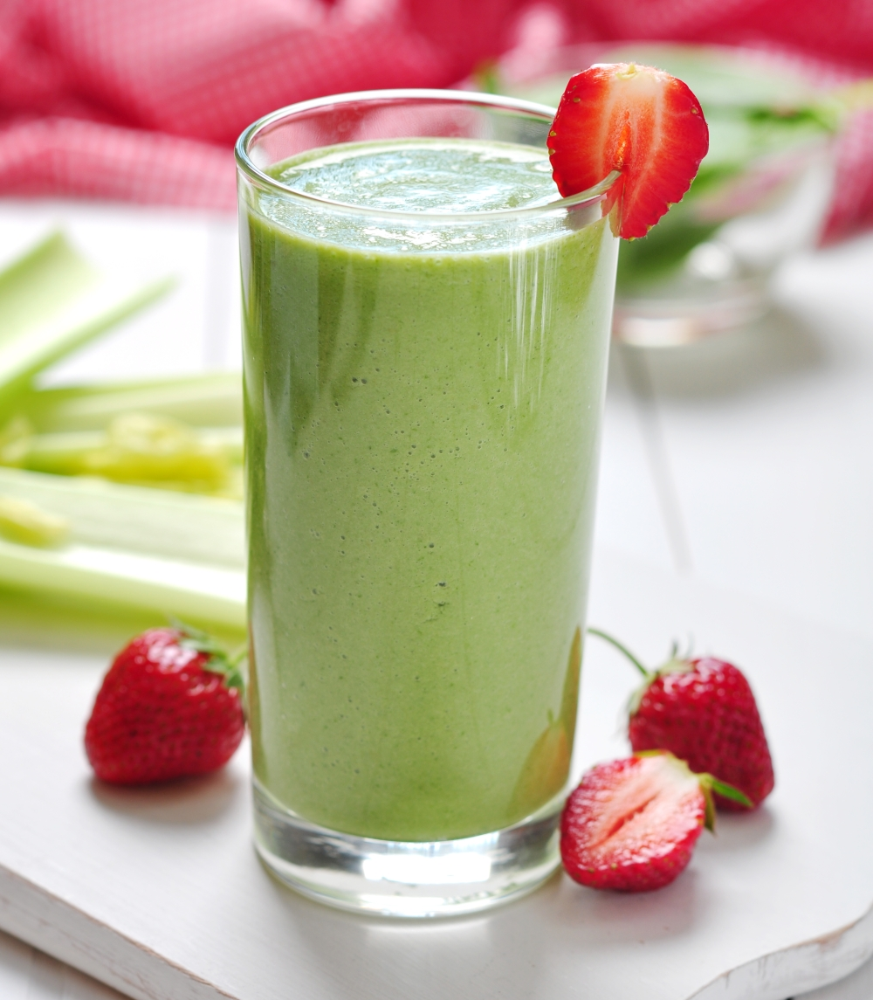

Strawberry Greens Smoothie

Description
A refreshing and healthy classic drink.
Not too difficult to make just requires five ingredients.
I always like to make these smoothies after a run and add a bit of protein to make a filling drink. One thing is certainly needed, A BLENDER.
Ingredients
- 80g of Strawberries (8-10)
- 30g of Kale
- 33g of Spinach
- 250g of Milk
- 75g of Ice Cubes (about 3-5)
Steps
- First place ice cubes into blender.
- Then place strawberries.
- Add kale and spinach on top of the strawberries.
- Finally add the ice cubes.
- Blend until ice cubes are obliterated.
- Enjoy your cold drink!